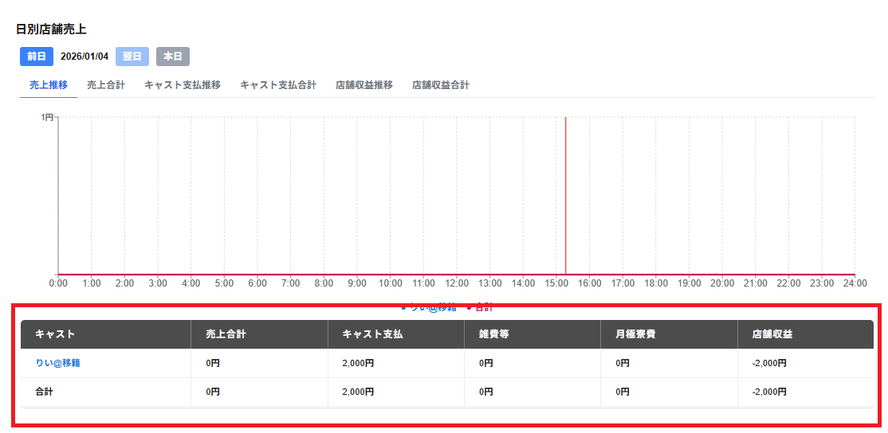

日別店舗売上の画面下部には以下の項目が一覧で表示されます。
一覧の最下部の行には以下の項目の合計の金額が表示されます。
・キャスト
キャスト名が表示されます。
・ 売上合計
キャスト別の請求金額の合計が表示されます。
・キャスト支払
キャスト支払が表示されます。
・雑費等
待機料・寮費・雑費とホテル支払の合計の金額が表示されます。
・月極寮費
月極寮費の金額が表示されます。
※店舗情報で月極寮費を未使用にしている場合表示されません。
・店舗収益
キャストによる店舗収益の金額が表示されます。
※売上合計からキャスト支払いと雑費等を引いて、月極寮費を足したものが店舗収益になります。
キャストの行を選択することでキャスト別のアナリティクスを確認することができます。
